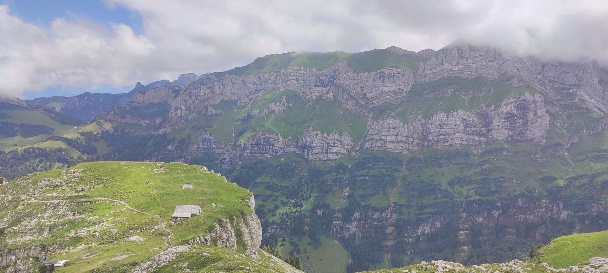
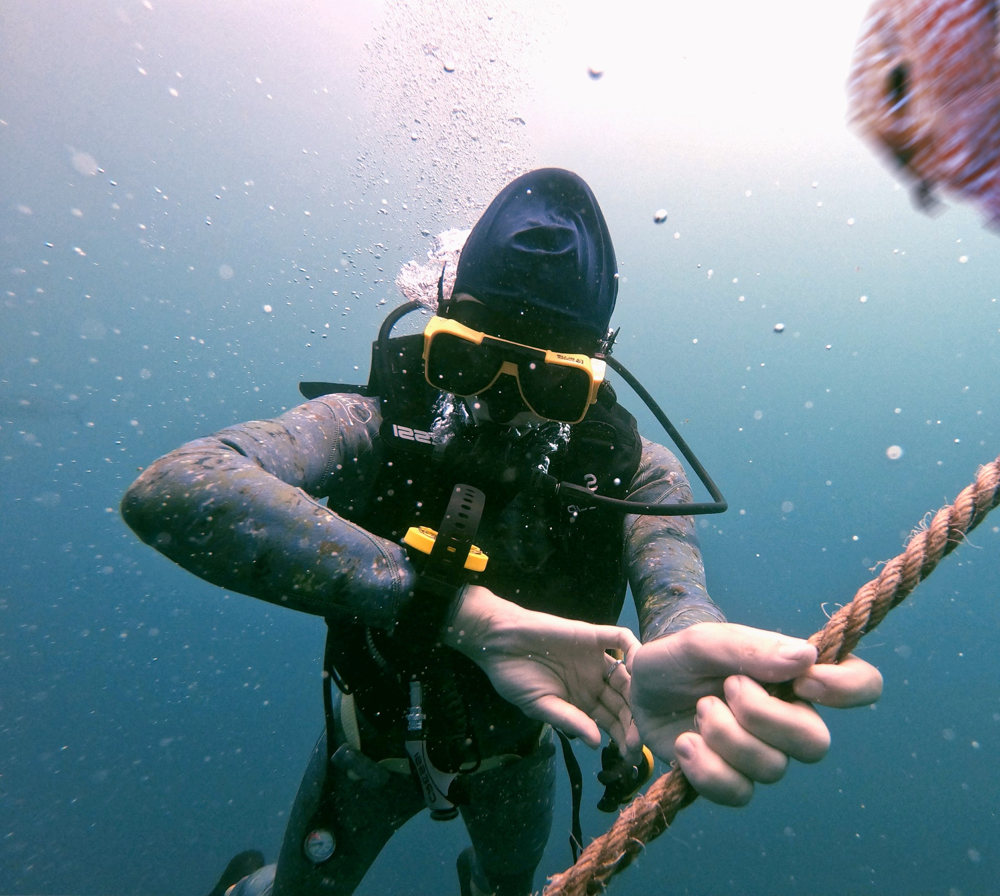
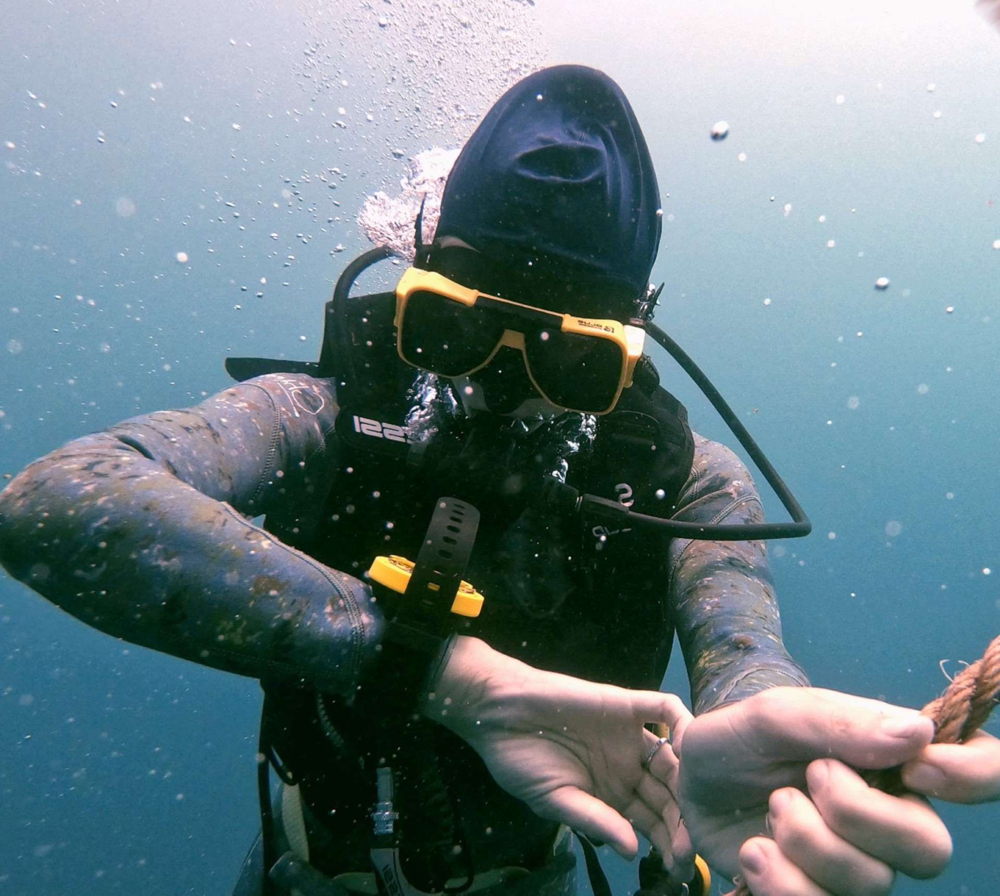
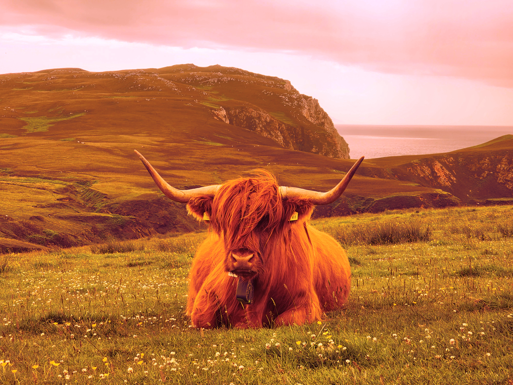
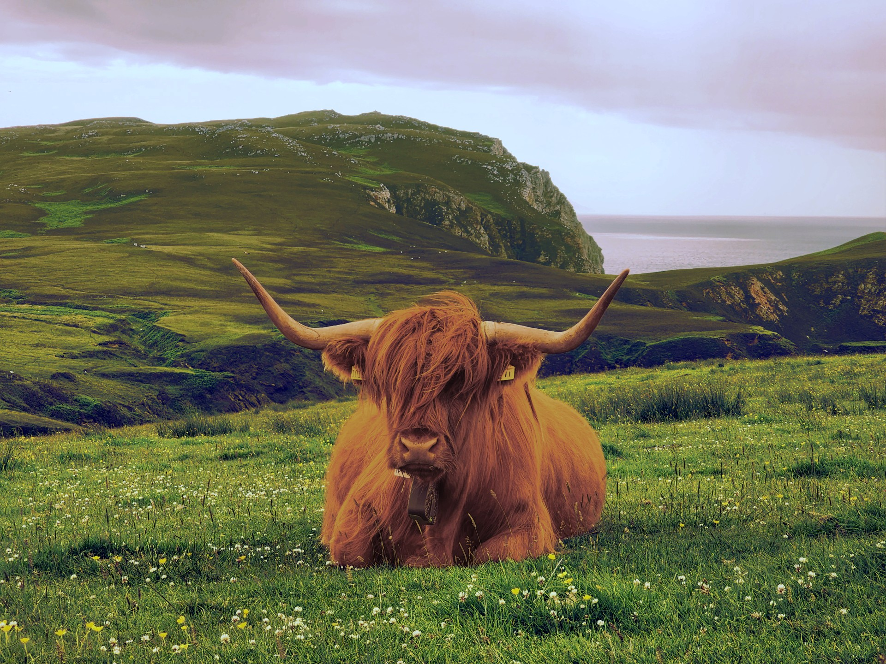
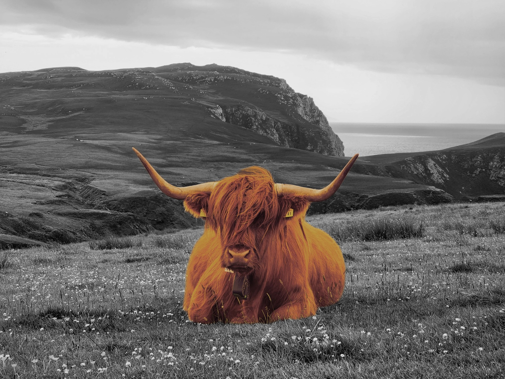
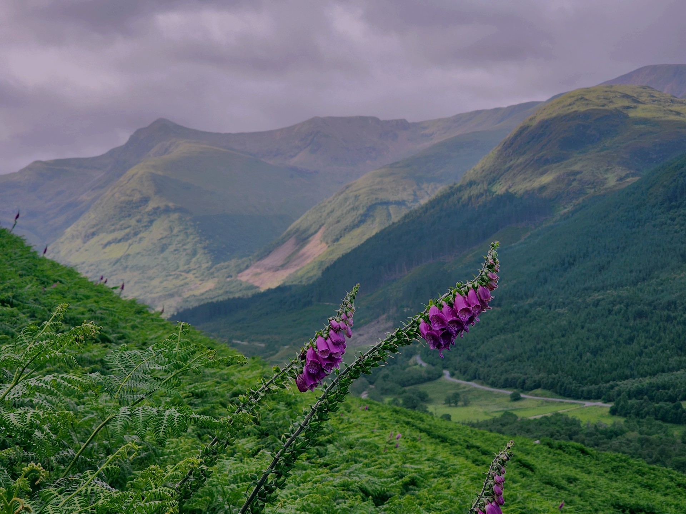

Min Portfölj








I denna uppgift ska jag skapa en hemsida med tre olika sidor, för att visa att jag kan bildbehandla bilder och implementera dem på en hemsida. Jag kommer att använda mig av photopea och pixlr för att redigera bilderna.